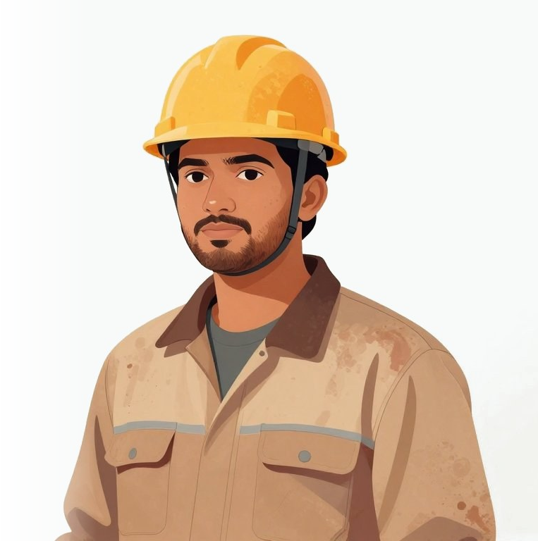
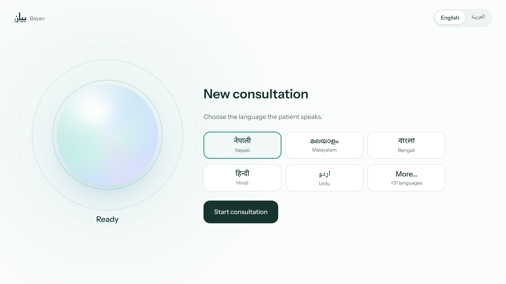
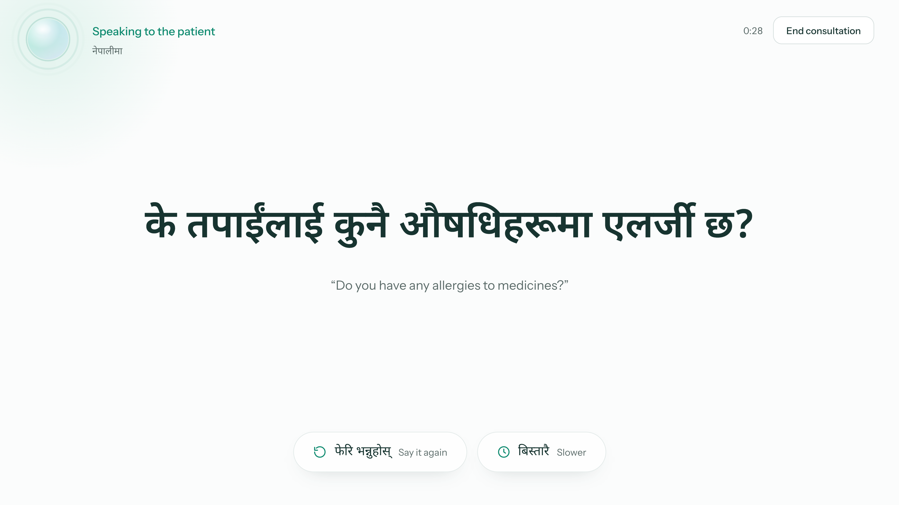
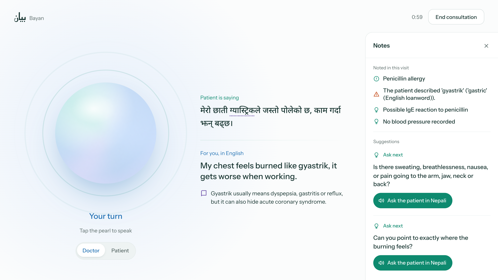
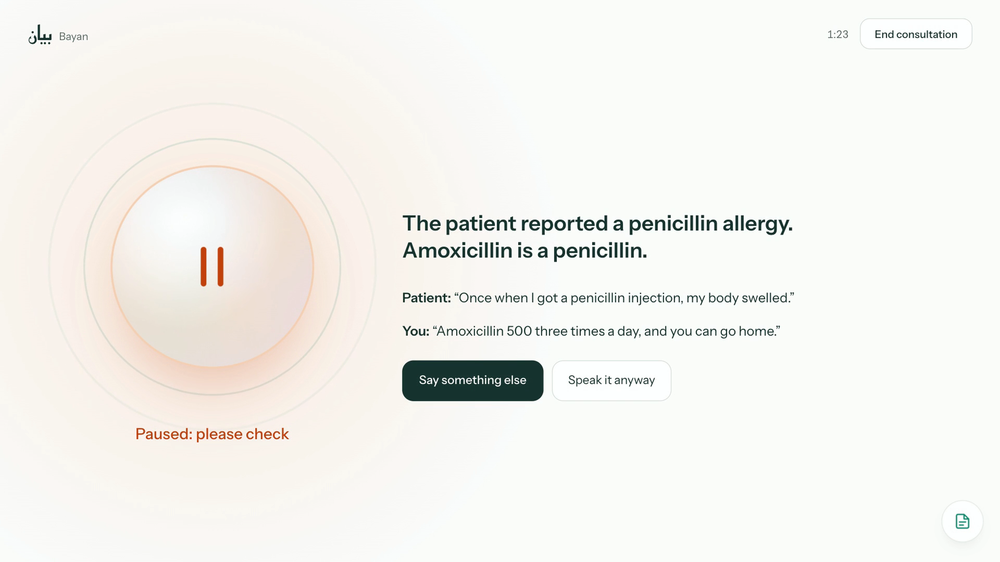
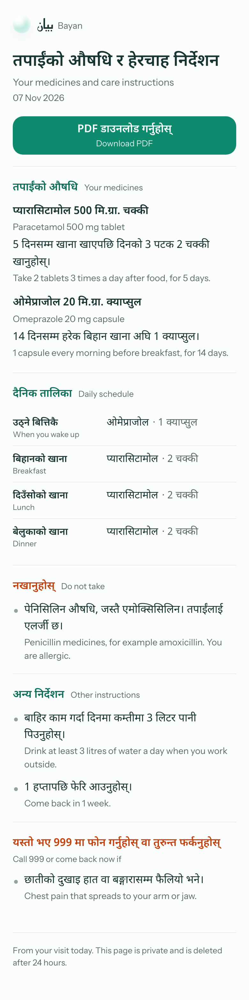
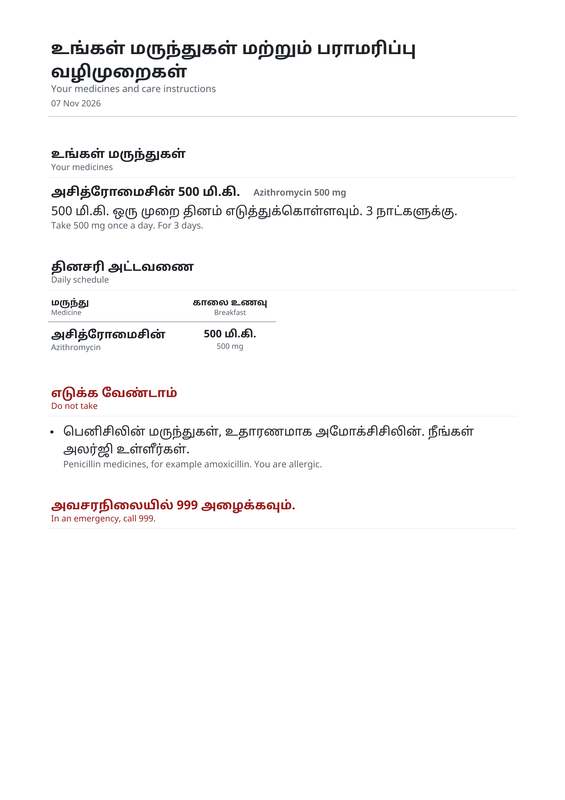
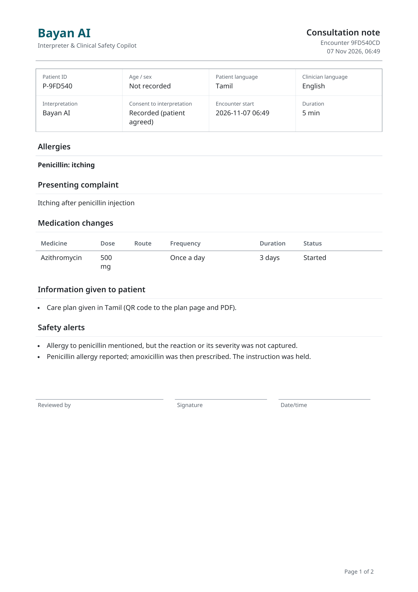
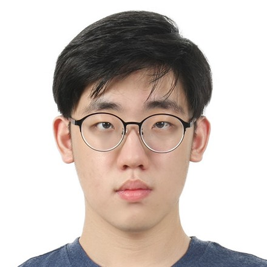
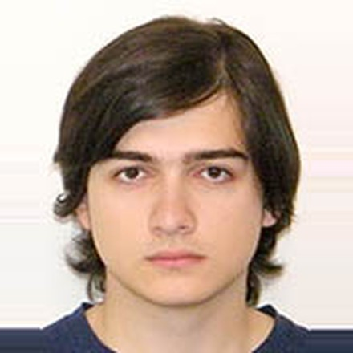

بيانBayan AI
A clinical AI system that interprets between doctors and patients in Qatar, reasons about the consultation, and flags what gets missed.
Team QH-129Qai × Hugging Face Hackathon O1Doha, 5–7 Nov 2026

Meet Anurag
29, a Nepali construction worker in Doha
“My chest is burning. It’s just gyastrik.”
ग्यास्ट्रिक, Nepali for “gastric”
The doctor hears reflux.
It could be his heart.
2Language barriers in Qatar
65%
of HMC ambulance staff face language barriers at work
71%
are comfortable letting family members interpret
9
languages with face-to-face interpreters at Sidra; Nepali, Malayalam, Bengali and Tagalog are not among them
Adverse events and language
Many patients in Qatar don’t share a language with their doctor. US hospitals that measured the effect found this.
Patients with limited EnglishEnglish-speaking patients
Adverse events that caused physical harm
1.7×
Harmful events rated moderate harm or worse, up to death
1.9×
Adverse events caused by communication errors
1.5×
Bayan is built to close this gap: it interprets, reasons about the consultation and flags what gets missed.
4What Bayan does
It listens to both sides of the consultation.
Interprets
37 patient languages. The doctor speaks English or Arabic.
Reasons
Keeps a running case summary and reviews it after every turn.
Flags
Allergies, doses, interactions, missed workup, plans that don’t fit the complaint, patient confusion, mood cues.
Suggests
One next question at a time, asked in the patient’s language with one tap.



Doctor and patient take turns tapping the pearl. Bayan translates, speaks, and checks.
Recorded on the live Space: scripted Nepali consultation, live translation and voices. Played at 2× speed.
Check before it is said

The patient mentioned a penicillin allergy, and the doctor then prescribed amoxicillin. Bayan paused the sentence before the patient heard it, so the doctor can say something else or speak it anyway.
7Care plan and doctor’s note



Architecture (overview)
9Architecture
10 Hugging Face stack
Hugging Face stack
Bayan AI
dullgrey/team-qh-129-bayan-app
gradio-appgradio
huggingfacesmolagents
Bayan Voice Worker
dullgrey/team-qh-129-bayan-voice
openaiwhisper-large-v3-turbo
ai4bharatindic-conformer-600m-multilingual
facebookmms-1b-all
speechbrainlang-id-voxlingua107-ecapa
ai4bharatindic-parler-tts
facebookmms-tts-tgl, mms-tts-swh
Supertonesupertonic-3
rhasspypiper-voices
Inference Providers
router.huggingface.co
openaigpt-oss-120b
Simulation results
Scripted consultations run through the real engine as text, with gpt-oss-120b. Results vary between runs.
Safety rules
38 consultations, 14 languages
99%
of 727 checks passed
0 of 44
false-alarm traps tripped
100%
of 477 PDF checks: native script, paused drug never on the patient sheet
Clinical review
16 consultations, 9 languages: 7 with a plan that doesn’t fit, 6 quiet visits, 3 repeats of rule cases
8 of 12
expected concerns flagged
0
false caution alerts on the 6 quiet visits
30 of 30
rule checks still passed, 0 of 22 traps tripped
Translation and gate: 0.9 s per turn. Agent card: about 7 s after the turn. LLM cost: about $0.014 per consultation.
12First customers in Qatar
1.46 M
visits to the four QRCS workers' health centres in 2025
1.56 M
HMC emergency visits in 2025, adult and paediatric
5.17 M
visits to PHCC's 31 health centres in 2024
Pricing to test: QAR 2–3 per consultation. A phone interpreter costs about QAR 40–60 per visit.
13Deployment and cost
All models are open-weight, so the system can also run on a hospital’s own servers.
$339 alone
$152 each if 4 share
$198 per clinic across 10
Comparison
| Nepali, Malayalam, Bengali in the room | Checks allergy, dose, missed workup | Pauses a sentence for the doctor to check | Can run in-country | Cost per visit | |
|---|---|---|---|---|---|
| Bayan | Yes, 37 languages | Yes, 83 cited rules | Yes | Yes, open weights | $0.09–0.28 |
| Phone and video interpreters | Yes, remote | Human judgement | No | No | $11–74 |
| Google, Microsoft Translate | Text; speech unverified | No | No | No | Free |
| AI medical interpreters | Claimed 40–150+ | Translation checks only | No | Some (Mabel) | Not public |
| Ambient AI scribes | No, English notes | No, documentation | No | No | $150–600 per doctor-month |
Next steps
- A pilot at one QRCS workers' health centre
- Clinicians to review our 83 rules and 98 idioms
- Native speakers to validate each language
Decision support for clinicians.
Not a certified interpreter or a medical device.
Team QH-129
huggingface.co/spaces/dullgrey/team-qh-129-bayan-app
Team
Team QH-129


Thank you
Questions
Try it live
huggingface.co/spaces/dullgrey/team-qh-129-bayan-app